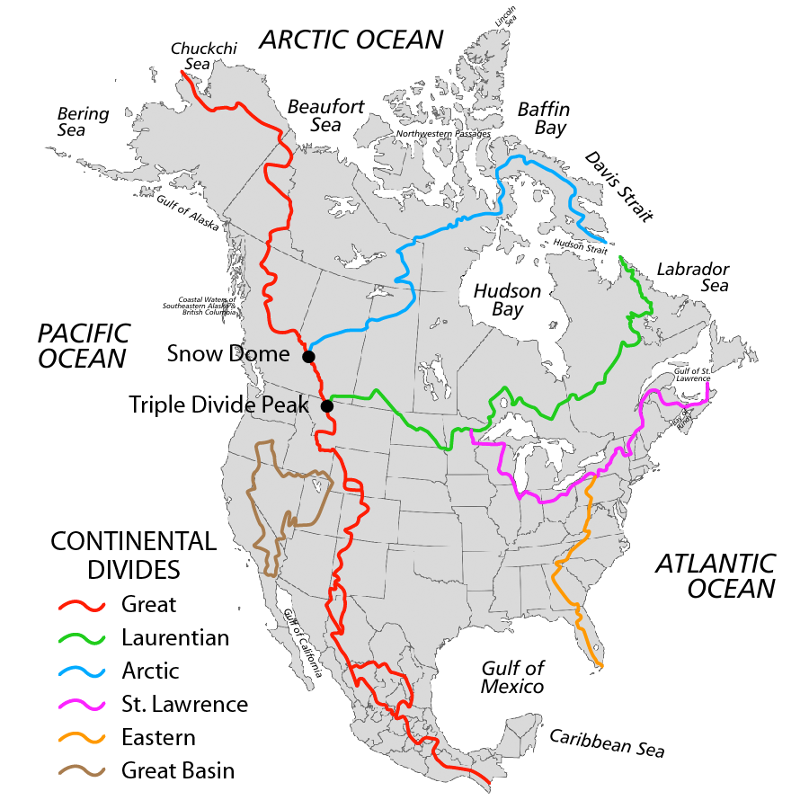

Events
Cycle the Continental Divide
The Great Divide Mountain Bike Route (GDMBR) is Adventure Cycling's premier off-pavement cycling route, crisscrossing the Continental Divide north to south. This route is defined by the word "remote." Its remoteness equates with spectacular terrain and scenery. The entire route is basically dirt-road and mountain-pass riding every day. In total, it has over 200,000 feet of elevation gain. Roughly 80% of it is composed of county, Forest Service (USFS), and Bureau of Land Management (BLM) dirt and gravel roads. The remainder is made up of four-wheel-drive tracks and singletrack trails (10%), and paved roads (10%).
Dates:
July 8, 2018 - July 15, 2018
Fees:
$99/per day
Route:
Meet at the Mountain Spoke where a bus will take us to Glacier National Park. From there, follow the guide along the Continental Divide to Big Hole. Meet the bus on July 14, 2018 and head back to The Mountain Spoke.
- Moderate Cycling Experience
- Ability to carry 20lbs. of gear
- Stamina to ride 55-65 miles per day
- Positive Attitude